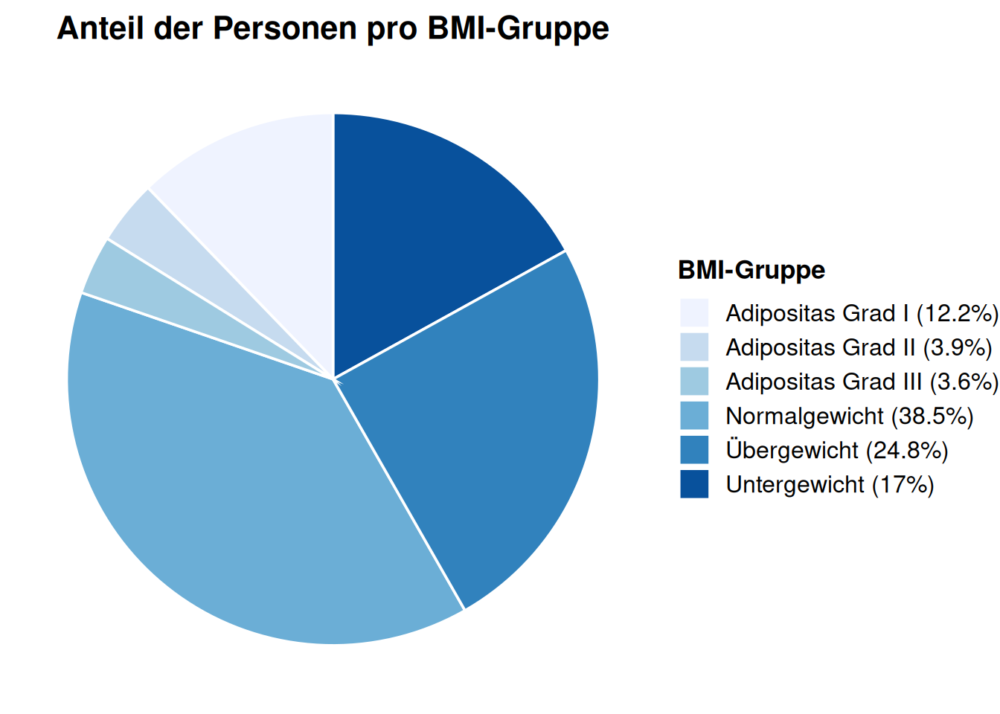

library(ggplot2)
library(dplyr)
Attaching package: 'dplyr'The following objects are masked from 'package:stats':
filter, lagThe following objects are masked from 'package:base':
intersect, setdiff, setequal, uniondata <- read.csv("data/Final_data.csv")
data <- data %>%
mutate(
BMI_group = cut(
BMI,
breaks = c(0, 18.5, 25, 30, 35, 40, max(BMI, na.rm=TRUE)+1),
include.lowest = TRUE,
right = FALSE,
labels = c("Untergewicht", "Normalgewicht","Übergewicht","Adipositas Grad I", "Adipositas Grad II", "Adipositas Grad III")
)
)%>%
ungroup()
bmi_percentage <- data %>%
count(BMI_group) %>%
mutate(
perc = n / sum(n) * 100,
label_legend = paste0(BMI_group, " (", round(perc,1), "%)")
)
ggplot(bmi_percentage, aes(x=1, y=perc, fill=label_legend)) +
geom_col(color="white")+
coord_polar(theta="y") +
scale_fill_brewer(palette="Blues") +
labs(
title = "Anteil der Personen pro BMI-Gruppe",
fill = "BMI-Gruppe"
) +
theme_void(base_size = 14)+
theme(
plot.title = element_text(hjust = 0.5, face="bold", size=16),
legend.text = element_text(size=12),
legend.title = element_text(size=13, face="bold")
)